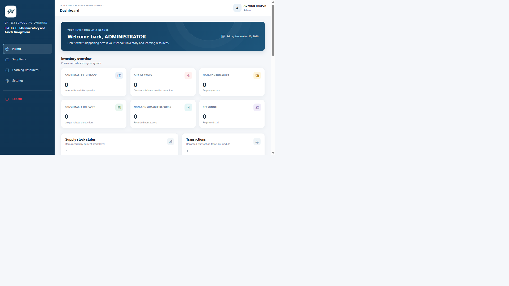
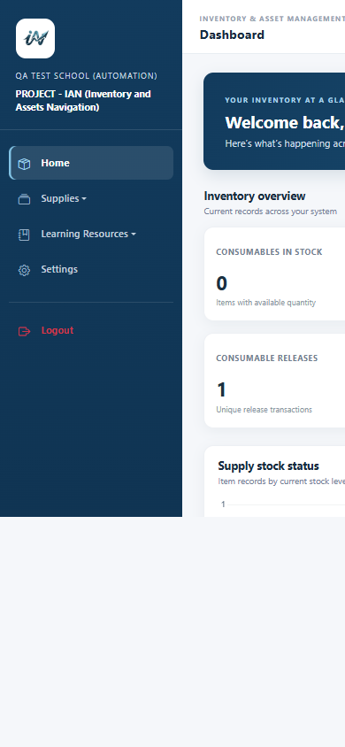
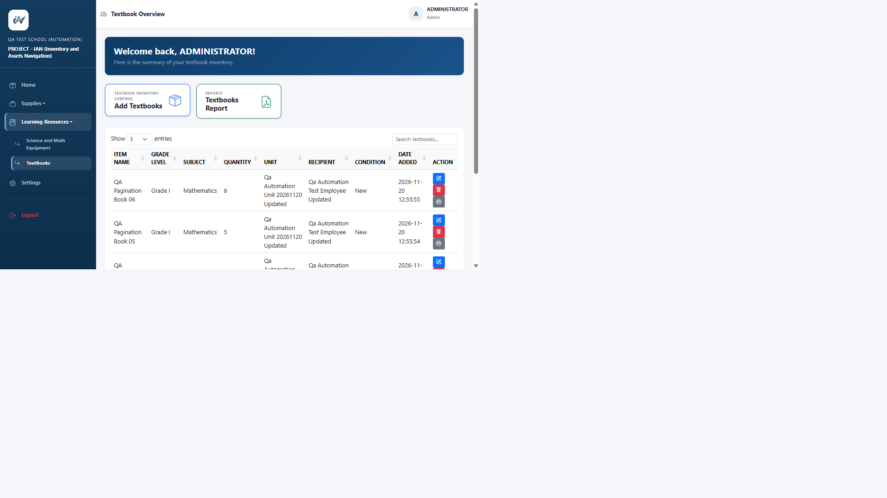
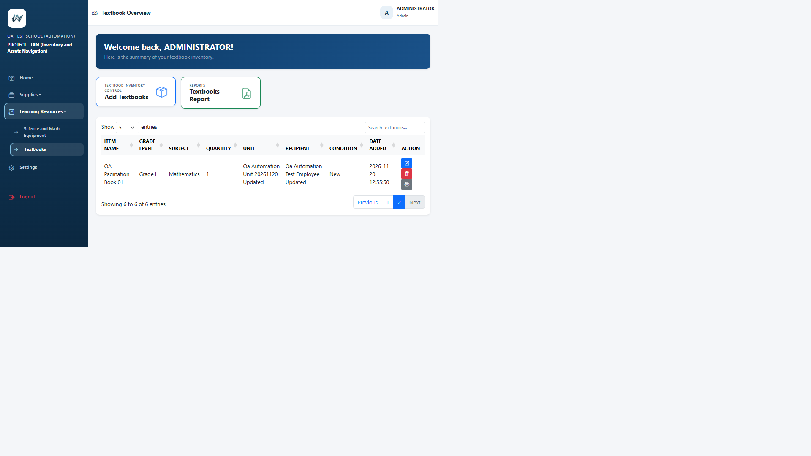
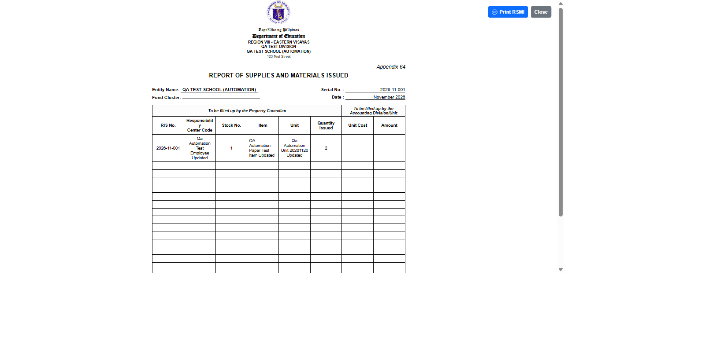

Live headed-browser testing performed 2026-11-20 with integrated Playwright 1.145.0 and Chromium 150.0.7871.250 against a disposable local PHP 8.3.30 / MySQL 8.4.3 instance.
Open complete functionality matrix (CSV) · Open detailed report · Open Playwright trace
This is a results summary, not the native Playwright HTML reporter. A standalone runner was unavailable in the environment.
/favicon.ico.




All 90 screenshots are in the screenshots folder.